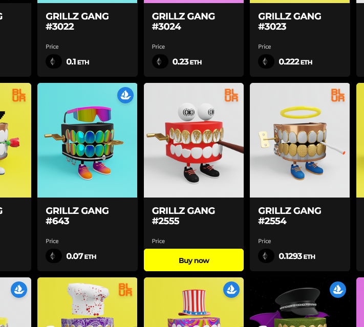

My Portfolio
Here's a few of the projects I've worked on and am proud to share. If you have any questions, feel free to check the attached Github links or contact me!

|
Splitter is a Java application designed to take a picture of a receipt, and split it into items for easier bill splitting between multiple people. I worked on this with a small group of friends to solve a regular issue we encountered with splitting grocery bills. This app replaced our increasingly convoluted spreadsheets and was a fun project to work on. Splitter |
|
I developed a course parsing app alongside some classmates that scraped the University of Guelph's course and presented all course dependencies and requirements in a connected graph using Electron.js. It fully supported the user to make custom views using a big data set and was aimed at optimizing course scheduling for students at the University of Guelph to graduate in as short a window as needed. |

|

|
I'm currently working on developing an app that will help crafty people keep tabs of their materials and completed tasks in an organized manner. I've been making it with my family in mind, as they felt it would be really helpful for all the sewing and crochet crafts that they've been working on. Craft Track |
|
Using Web3, I made a specialty tool for a client that determined whether a user's connected wallet contained an NFT of select brand. I took on this task on both on commision and as an opportunity to look into some of the past excitement about blockchain development. I'm a curious person by nature, and think it's crucial to understand emerging technologies, lest we slip into complacency. |
 |
Hey what's this? -> Could it be a cool link to something great?